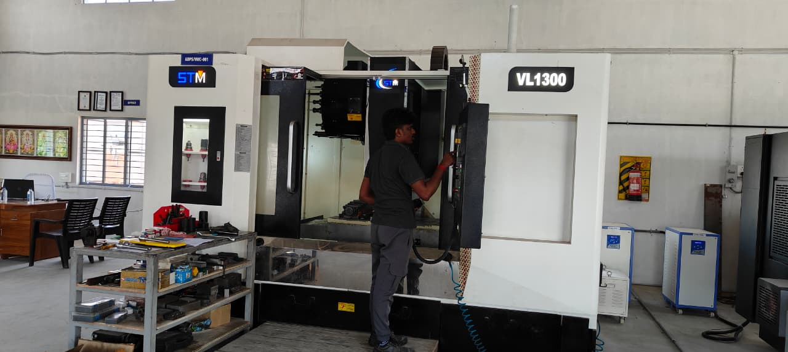
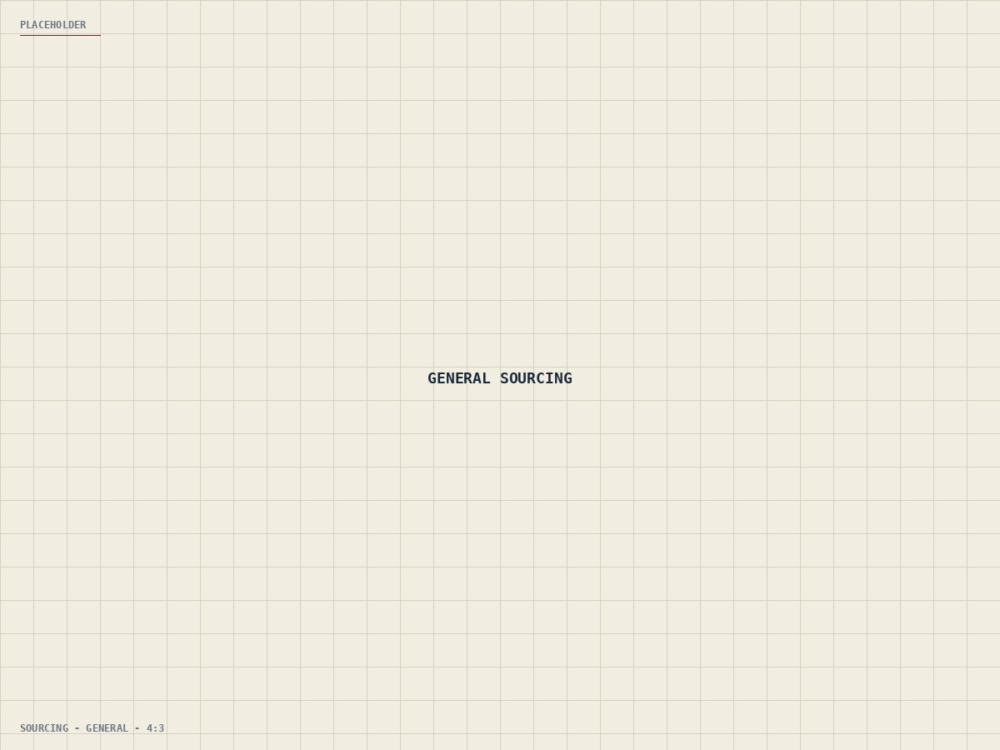

Three audiences. The same operating team behind each.
Packaging industry OEMs
We have our deepest industry experience in packaging — wear parts, production consumables, custom fixtures, and retrofit hardware for the machines that run food, beverage, and consumer packaging lines. For packaging OEMs, we take on three kinds of work:
- Custom parts from drawings. Turnkey machining of parts you already design — we quote, produce, and ship. Most common on stainless steel wear components and food-grade plastics.
- CAD and design-for-manufacturing. When your engineering team is buried, we take the design work off their desk. From a concept, sketch, or sample, we produce a production-ready drawing and a quote against it.
- Overflow capacity. When your own shop is bottlenecked on a specific job or SKU, we slot in as contract machining. Drawings go in, parts come out, your customer never knows. Canadian PM on the account.

System integrators
System integrators build complete production lines — combining machines from multiple OEMs with conveyors, robotics, vision, and controls into a working system for an end customer. The design work is heavy, the timelines are tight, and the margin on custom hardware is thin. That's exactly where we fit.
- Custom brackets, guards, fixtures, and transfer hardware. The one-off parts every integration needs, quoted fast from your drawings.
- CAD and DFM for integration-specific components. When a part has to fit between two OEM machines that were never designed to work together, we produce the drawing and the component.
- Capacity on parallel builds. When you're running three integrations at once and your own shop can only absorb one, we take the hardware scope on the other two.

General sourcing
Outside packaging, we've produced parts for food processing, automotive, and general industrial sectors — any application where stainless, aluminum, brass, bronze, or food-grade plastics are the working materials. If you have a drawing and a lot size that fits our range, we can likely quote it.
- One-off prototypes and short runs. Lot sizes from one piece to several hundred, without the setup surcharges that usually come with small batches.
- Replacement parts and retrofits. If an OEM is charging a premium on a replacement part and you have the drawing or a sample, send it — we'll tell you honestly whether re-sourcing makes sense.
- Design and reverse-engineering. Where no drawing exists, we work from samples or photographs, produce the CAD, and quote against it.
